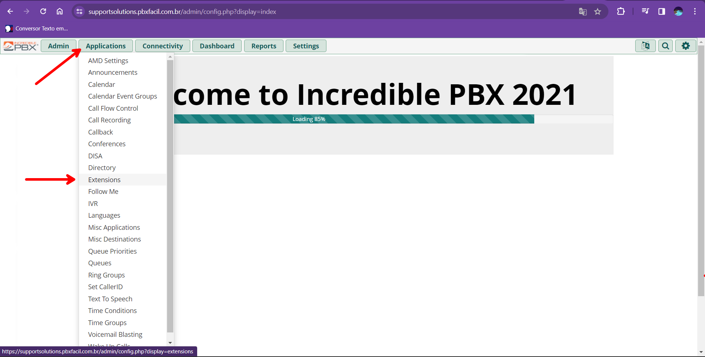
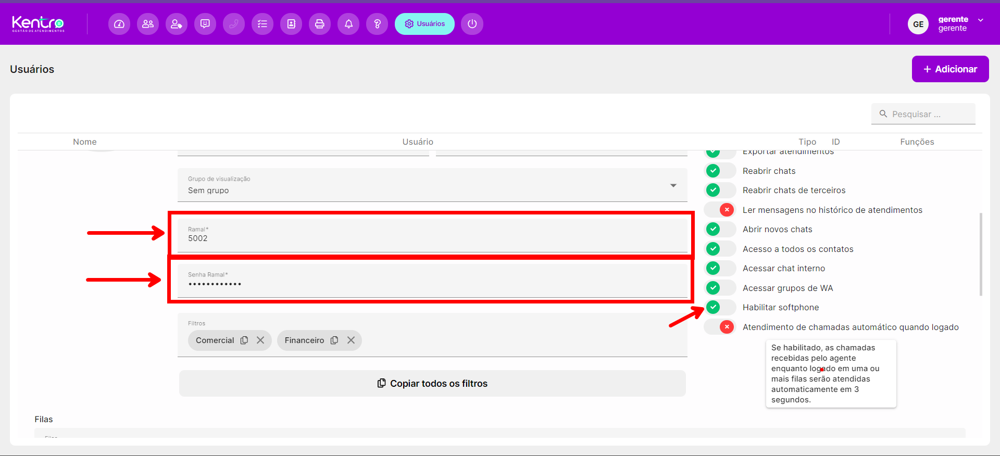

Gestão de Ramais (Extensions) e Softphones
Como criar e administrar ramais PJSIP, configurar telefones físicos/MicroSIP, habilitar gravação de chamadas e vincular o Webphone ao sistema AtenderBem.

1. O que é um Ramal (Extension)?
O Ramal é o ponto de terminação individual de cada atendente ou estação de trabalho. Ele permite que os colaboradores conversem gratuitamente entre si dentro da empresa e recebam ou realizem chamadas externas através dos troncos SIP.
| Tipo de Ramal | Onde é Utilizado | Protocolo / Recomendação |
|---|---|---|
| Ramal Webphone (Navegador) | Diretamente dentro do painel do AtenderBem, sem instalar nada. | PJSIP / WebRTC (Recomendado para agentes de atendimento). |
| Ramal Softphone (Computador) | Aplicativos de desktop como MicroSIP, Zoiper ou Linphone. | PJSIP / SIP UDP/TCP (Recomendado para estações administrativas). |
| Telefone IP Físico / ATA | Aparelhos de mesa físicos (Yealink, Grandstream, Intelbras). | PJSIP / SIP UDP com registro no IP público do PABX. |
2. Passo a Passo: Criando um Ramal PJSIP no FreePBX
- No menu do PABX, acesse
Applications › Extensions › Add Extension › Add New PJSIP Extension. -
Aba General:
- User Extension: Número numérico do ramal (ex.:
1001,1002,2001). - Display Name: Nome do atendente ou departamento (ex.:
Carlos Silva - Suporte). - Outbound CID: Identificador enviado ao discar externamente (opcional, pode herdar do tronco).
- Secret: Senha alfanumérica forte gerada pelo sistema. Copie este valor!
- User Extension: Número numérico do ramal (ex.:
-
Aba Recording Options (Gravação de Voz):
- Inbound External Calls: Definir como
ForceouYespara gravar todas as ligações recebidas de clientes. - Outbound External Calls: Definir como
ForceouYespara gravar todas as ligações feitas pelos atendentes.
- Inbound External Calls: Definir como
-
Aba Voicemail (Caixa Postal - Opcional):
- Habilite
Status = Enable, defina uma senha numérica e insira o e-mail do atendente para receber o áudio da mensagem por e-mail em formato WAV.
- Habilite
- Clique em Submit e depois em Apply Config no topo da tela.
3. Vinculando o Ramal ao Atendente no AtenderBem
Após criar o ramal no PABX, é necessário vinculá-lo ao cadastro do operador no sistema omnichannel:

- No sistema AtenderBem, acesse
Configurações › Usuários. - Localize o atendente na listagem e clique no ícone de edição.
- Nas opções do formulário, ative a chave "Habilitar softphone".
- No campo Ramal, informe o número da extension criada (ex.:
1001). - No campo Senha, cole o
secretcopiado do PABX. - Clique em Salvar.
Verificação em Tempo Real: Quando o atendente fizer login no AtenderBem, o ícone do telefone no cabeçalho ficará Verde indicando registro SIP com sucesso. No PABX, execute
asterisk -rx "pjsip show endpoints" para ver o ramal em estado Available / Reachable.
4. Configuração em Aplicativos Softphone (Ex: MicroSIP)
Caso o atendente utilize um aplicativo desktop (MicroSIP):
- Account Name: Nome do atendente (ex.:
Carlos). - SIP Server: IP Externo do PABX (obtido no Asterisk SIP Settings) ou domínio (ex.:
habilistest.pbxfacil.com.br). - User / Login: Número do ramal (ex.:
1001). - Password: O
secretdo ramal. - Media Encryption: Desativado para conexões locais padrão ou Mandatory SRTP se configurado com TLS.